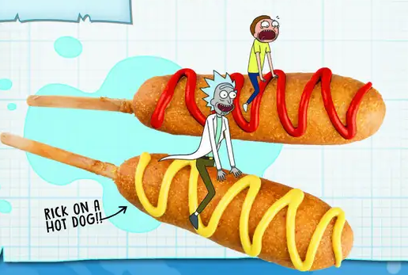

Hot Dogs On A Rick

Note from Rick
Like Hot Dogs on a stick...get it?
Ingredients
- 6 Skewers
- 6 Hot Dogs
- 6 Slices mozzarella cheese
- 1 Cup Cornmeal
- 1 Cup Flour
- 2 Tablespoons White Sugar
- 4 Teaspoons Baking Powder
- 1/2 Teaspoon Salt
- 1/2 Teaspoon Onion Powder
- 1 Teasospoon ancho chilli powder
- 1 cup oil
- 1 Cup Milk
- 1 Egg
Put it all together
- Insert skewers lengthwise through the hotdog then set aside.
- Lay down 1 piece of sliced cheese, then place hot dog horizontally across it and wrap it up. Refrigerate for 10 to 15 min.
- Heat oil in a large Dutch oven to 350 degrees.
- Combine all dry ingredients and the milk and eggs and whisk together until the batter consistency is similar to that of pancake batter. Transfer to a thin container tall enough to submerge hot dogs.
- Dip one hot dog at a time into batter and swirl to ensure even coating.
- Fry until golden brown then remove and drain on a wire rack.
- Serve customers, making sure they have a "Hot Dog of a Day".